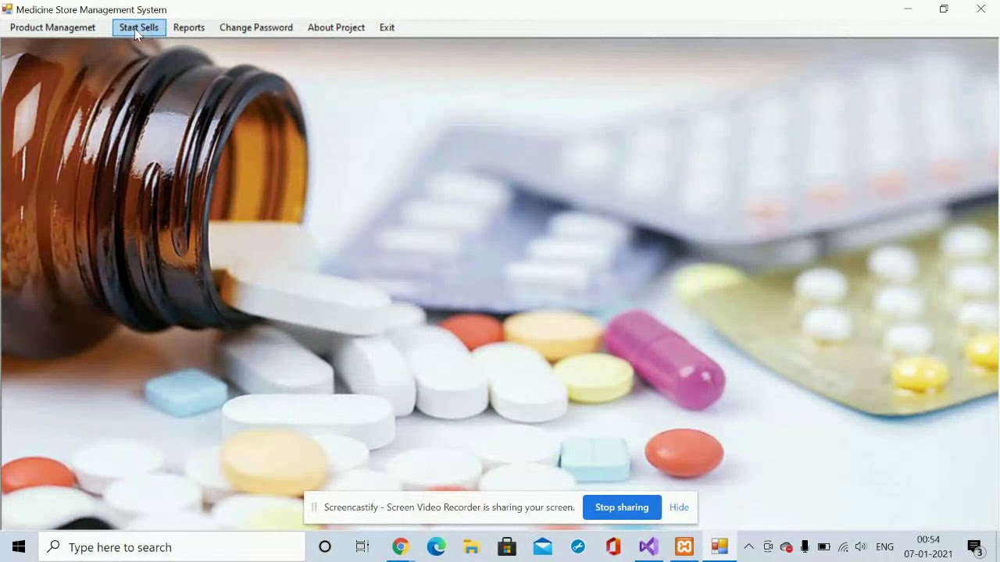
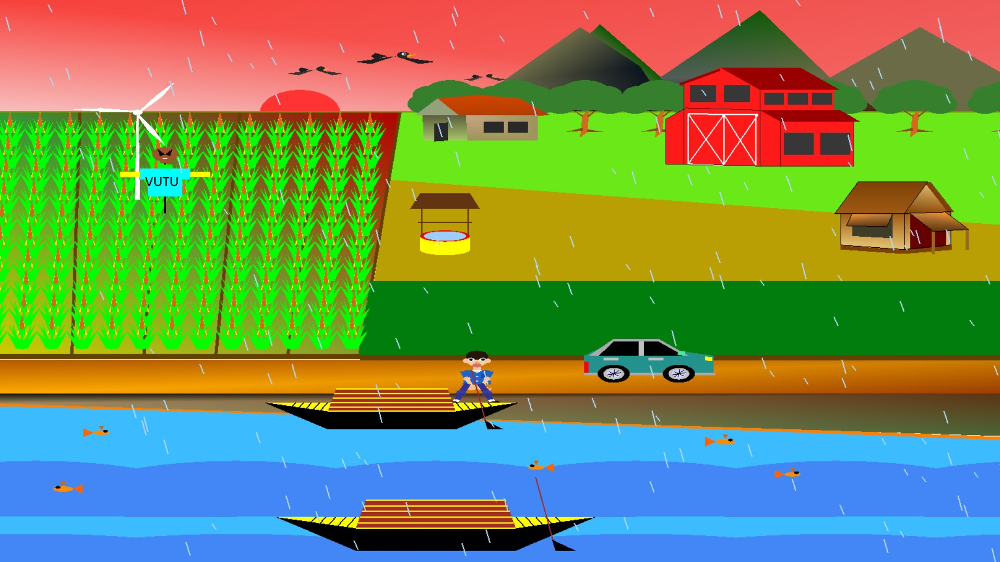

Home | Education | Experience | Contact Me

A conceptual design-level project focused on transforming waste management ideas into a sustainable digital solution using structured planning and UI design tools.
Project Links:
GitHub

A desktop-based application developed using C# and SQL that manages medical store operations including inventory, user roles, and automated billing system with receipt generation.
Project Links:
GitHub

A computer graphics project built using C++ and OpenGL featuring a dynamic animated village environment with day-night cycle, weather effects, and multiple animated objects.
Project Links:
GitHub